🦉 Eulenpfad — Anleitung für Erwachsene
Für Eltern, Lehrpersonen und alle, die Kinder beim Üben begleiten: Konten anlegen, Lernplan setzen, Spiele freigeben, Fortschritt ansehen, Meldungen der Kinder bearbeiten, Daten sichern und zwischen Geräten abgleichen.
1. Das Wichtigste vorab
- Alles bleibt auf diesem Gerät. Namen, Klasse und gespielte Runden speichert nur der Browser. Nichts geht von selbst an einen Server, es gibt kein Konto bei einem Dienst und keine Werbung. Daten verlassen das Gerät nur auf Knopfdruck: beim Sichern, beim Abgleich in einen Ordner, den Sie wählen, beim Weiterleiten einer Fehlermeldung (ohne den Namen des Kindes) und wenn ein Kind ein Abzeichen als Bild teilt (mit seinem Vornamen).
- Nur Vornamen. Für die Kinder genügt ein Vorname oder ein Spitzname — keine Nachnamen, keine Schule, keine Fotos.
- Daten sichern. Wer die Browserdaten löscht, löscht auch die Spielstände. Sichern Sie deshalb ab und zu (Abschnitt 15).
- Fehler sind nicht schlimm. Bei einer falschen Antwort gibt die Eule einen Hinweis, und das Kind versucht es nochmals. Es gibt keinen Punktabzug und standardmässig keinen Zeitdruck.
2. Erster Start: Aufsicht einrichten
Beim ersten Öffnen ist noch niemand da. Zuerst richtet eine erwachsene Person die Aufsicht ein; sie legt danach die Kinder an.
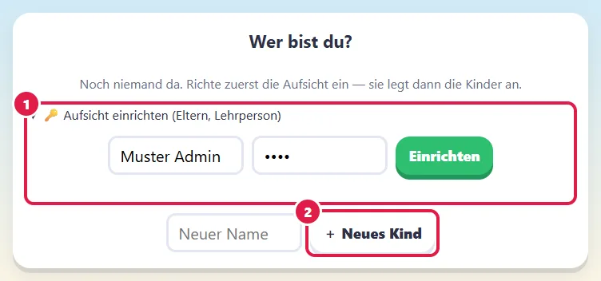
- 1Aufsicht einrichten aufklappen, Ihren Namen und eine PIN mit 4 bis 6 Ziffern eingeben, „Einrichten“ tippen.
- 2Kinder können Sie gleich hier mit Neues Kind anlegen oder später in der Verwaltung (Abschnitt 6).
Merken Sie sich die PIN. Gespeichert wird nur ein verschlüsselter Prüfwert; vergessen lässt sie sich nur von einer zweiten Aufsicht neu setzen.
3. Anmelden und wechseln
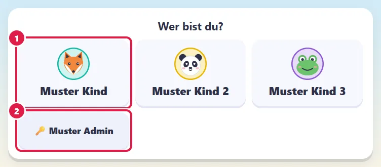
- 1Kinder tippen einfach auf ihren Namen — ohne PIN.
- 2Die Aufsicht (mit 🔑) braucht ihre PIN.
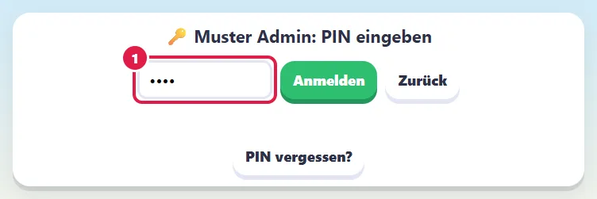
Die Anmeldung der Aufsicht gilt nur, solange das Browserfenster offen ist. Wer das Fenster schliesst, ist wieder abgemeldet — so bleibt die Verwaltung den Kindern verschlossen. Gewechselt wird oben rechts beim Namen oder in einem Spiel über „wechseln“.
4. Die fünf Bereiche
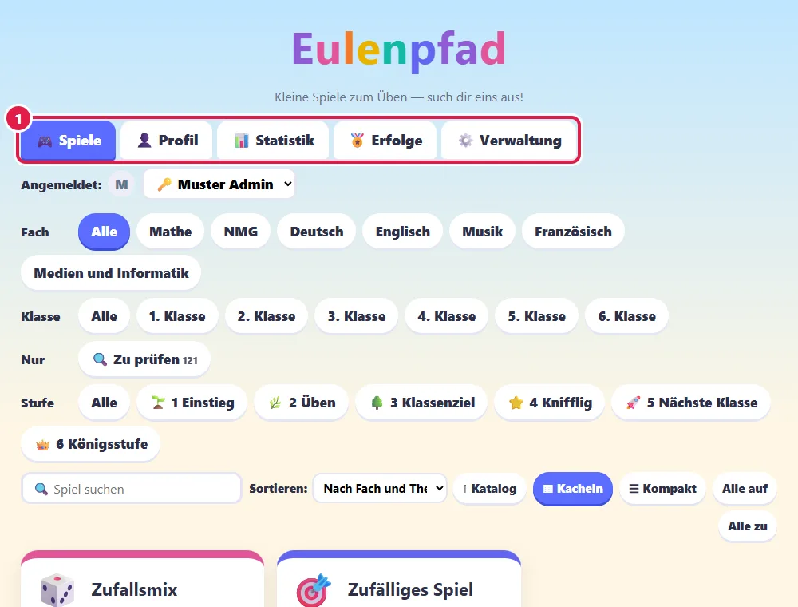
1Oben wählen Sie den Bereich:
- 🎮 Spiele — alle Spiele nach Fach und Thema, mit Suche, Filtern und dem Zufall (Abschnitt 5).
- 👤 Profil — das Kind wählt hier nur sein Bild (ein Tier). Sie setzen Alter, Klasse und Fokus-Lernziele und die Vorgaben für Reihenfolge der Teile, Timer und Vorlesen. Das Kind kann diese im Spiel umstellen, ausser Sie setzen 🔒 fest; ↺ Auf Vorgabe zurück löscht seine eigene Wahl. Aus der Klasse schlägt jedes Spiel eine passende Stufe vor.
- 📊 Statistik — was geübt wurde, was sitzt, ein Fazit in Worten, Empfehlungen (Abschnitt 12).
- 🏅 Erfolge — Wochenziel und Abzeichen (Abschnitt 13).
- ⚙️ Verwaltung — nur für die Aufsicht: Konten, Freigabe, Abgleich, Einstellungen, Meldungen.
5. Spiele finden
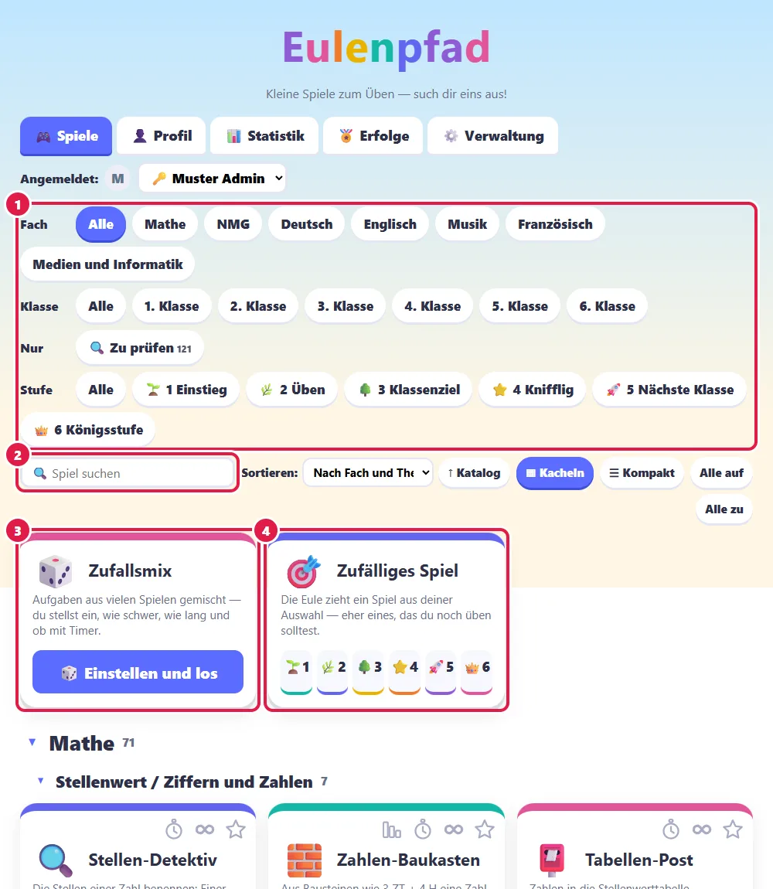
- 1Filter in Zeilen: Fach, Klasse (für welche Klasse ein Spiel gedacht ist), Nur und Stufe. Thema, Stufe und Klasse lassen sich mehrfach wählen; „Alle“ wählt alles an und, nochmals getippt, alles ab. In der Zeile Nur stehen 🎒 Meine Klasse (für Kinder: Spiele, die zu ihrer Klasse passen; vorgegeben an, das Kind darf ihn ausschalten), ⭐ Mein Fokus und für die Aufsicht 🔍 Zu prüfen.
- 2Suche nach Name, Lernziel, Beschreibung oder Inhalt; die besten Treffer kommen zuerst. Für ein Kind rücken Spiele etwas nach vorn, die zu seiner Klasse und zu dem passen, was es noch üben sollte.
- 3🎲 Zufallsmix — Aufgaben aus vielen Spielen gemischt; das Kind stellt ein, wie schwer, wie lang und ob mit Timer.
- 4🎯 Zufälliges Spiel — die Eule zieht ein Spiel aus der gefilterten Auswahl, eher eines, das noch Übung braucht oder lange nicht mehr dran war.
Auf dem Startbild und am Ende jedes Spiels führt 🔗 Ähnliche Spiele zu Spielen mit demselben Lernziel oder Thema.
Sortieren: Vorgegeben stehen die Spiele nach Fach und Thema. Daneben gibt es „passt zu dir zuerst“, Alphabet und Klasse, je auf- oder absteigend. Die Aufsicht wählt immer selbst; Kinder ab der 4. Klasse auch (Einstellungen). Je Kind lässt sich beides in den Konten abweichend setzen (Spalte 🔀).
Alle Spiele auf einen Blick: Im Portal unter „📋 Alle Spiele“ steht eine Tabelle mit Fach, Thema, Spielweise, Klasse und ob ein Spiel schon geprüft und für Kinder frei ist — nach mehreren Spalten sortierbar.
6. Kinder, Konten und Lernplan
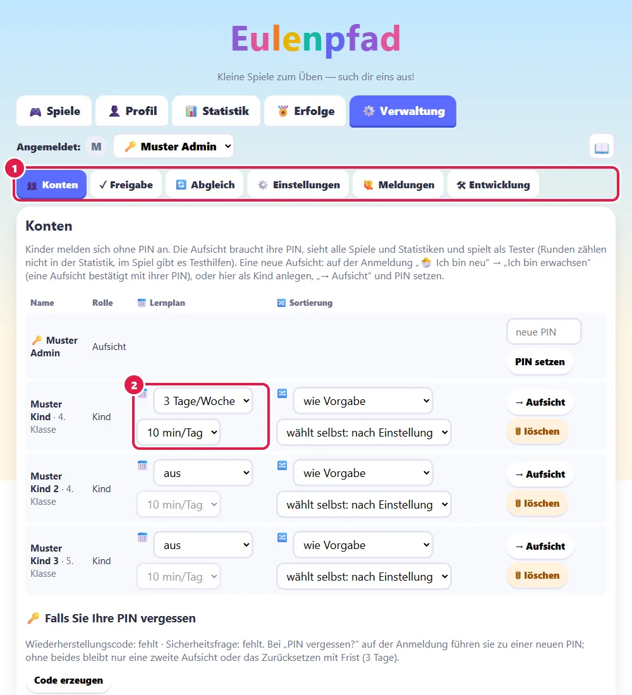
1Die Verwaltung hat Untertabs. Unter Konten:
- Neues Kind: Vorname und Klasse eingeben, „Anlegen“. Als Klasse geht auch Kindergarten: Dann beginnen die Spiele der 1. Klasse auf Stufe 1, und die Eule liest von selbst vor (Abschnitt 8).
- 2📅 Lernplan: je Kind Tage pro Woche und Minuten je Tag, zum Beispiel 3 Tage × 10 Minuten. Jede erfüllte Woche gibt dem Kind einen Wochenstern 🌟 — unabhängig von Fehlern und Tempo. „aus“ heisst kein Ziel.
- → Aufsicht: macht aus einem Konto eine weitere Aufsicht (zum Beispiel für den zweiten Elternteil); danach bei diesem Konto eine PIN setzen.
- PIN setzen: neue PIN für eine Aufsicht, auch wenn sie ihre vergessen hat.
- löschen: entfernt das Konto eines Kindes. Vorher sichern, wenn seine Runden erhalten bleiben sollen.
7. Spiele, Stufen, Timer, Endlos
Jedes Spiel übt ein Lernziel aus dem Lehrplan Volksschule St. Gallen und hat sechs Stufen, bezogen auf die Klasse, für die das Spiel gedacht ist:
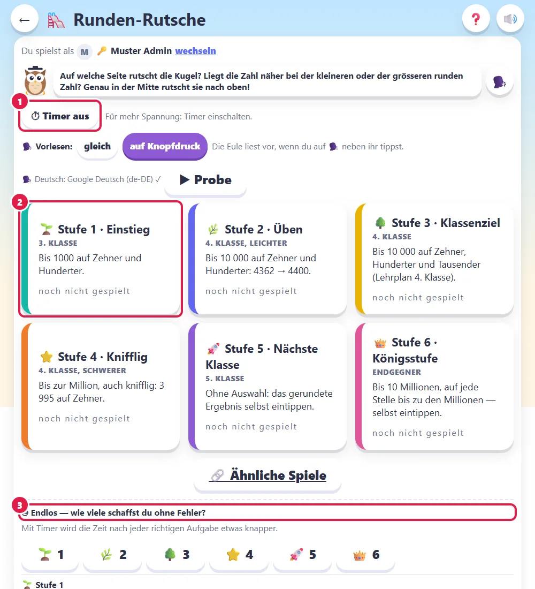
- 1Timer — zuschaltbar für mehr Spannung. Läuft die Zeit ab, zählt das als Fehler, die Aufgabe bleibt aber lösbar. Gemessen wird die Zeit je Aufgabe immer (für die Statistik).
- 2Stufen — 🌱 1 Einstieg (eine Klasse tiefer) · 🌿 2 Üben · 🌳 3 Klassenziel · ⭐ 4 Knifflig · 🚀 5 Nächste Klasse · 👑 6 Königsstufe. Unter jeder Stufe steht, für welche Klasse sie gedacht ist, und was schon erreicht ist.
- 3Endlos — so viele Aufgaben wie möglich ohne Fehler (Abschnitt 9).
Eine Runde hat meist 8 Aufgaben und dauert 2 bis 5 Minuten. Am Ende gibt es 1 bis 3 Sterne; ein Fehler zählt dabei voll, ein geholter Tipp halb — fragen ist günstiger als raten.
8. Im Spiel: Hilfe, Tipp, Vorlesen, Melden
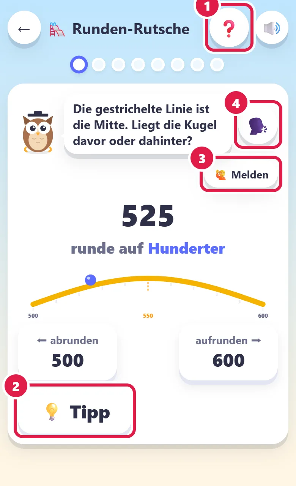
- 1❓ Hilfe erklärt, wie das Spiel geht. Die Uhr hält dabei an.
- 2💡 Tipp hilft bei der aktuellen Aufgabe; jedes Antippen zeigt den nächsten. Nicht im Endlos-Modus.
- 3🙋 Melden — das Kind meldet einen Fehler im Spiel, mit kurzer Begründung (Abschnitt 14). Wer melden darf, stellen Sie ein (Abschnitt 17).
- 4🗣️ Vorlesen — die Eule liest Auftrag und Tipps vor. Im Kindergarten und in der 1. Klasse geschieht das von selbst, sonst auf Knopfdruck; umstellen lässt es sich im Profil und auf dem Startbild jedes Spiels. Bleibt der Auftrag von Aufgabe zu Aufgabe gleich, liest sie ihn nur beim ersten Mal. Den Stoff eines Lesespiels liest sie nie vor, und nicht in Englisch und Französisch. Den Knopf gibt es nur, wenn das Gerät eine deutsche Stimme hat.
Langes Drücken auf einen Knopf liest seinen Text vor (nicht in Deutsch-Spielen, wo die Wörter der Stoff sind). Der Ton-Schalter 🔊/🔇 oben rechts schaltet Töne und Stimme zusammen aus.
9. Endlos-Modus und Ranglisten
Bei vielen Rechenspielen gibt es unter den Stufen ♾ Endlos: Aufgaben, bis die erste falsch ist. Gezählt werden die richtigen in Folge. Mit eingeschaltetem Timer wird die Zeit nach jeder richtigen Aufgabe etwas knapper — dann zählt es auch als Ende, wenn die Zeit abläuft.
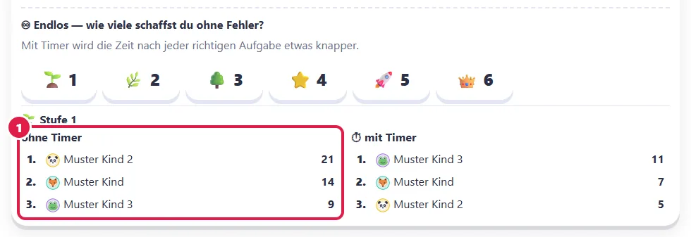
- 1Ranglisten: je Stufe eine ohne und eine mit Timer. Es zählt der beste Wert jedes Kindes; Testrunden der Aufsicht erscheinen nicht.
- Ranglisten machen besonders Spass, wenn mehrere Kinder mitspielen — Geschwister, Freundinnen und Freunde oder eine Klasse.
- Spielen die Kinder an verschiedenen Geräten, sieht jedes Gerät zuerst nur seine eigenen Rekorde. Erst der Abgleich bringt alle in dieselbe Rangliste.
In der Statistik steht je Spiel und Stufe der beste Wert des Kindes und sein Platz:
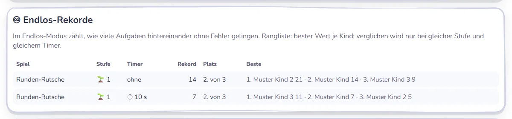
10. Selbst ausprobieren
Als Aufsicht können Sie jedes Spiel selbst spielen. Ihre Runden zählen als Testrunden und erscheinen nicht in der Statistik der Kinder.
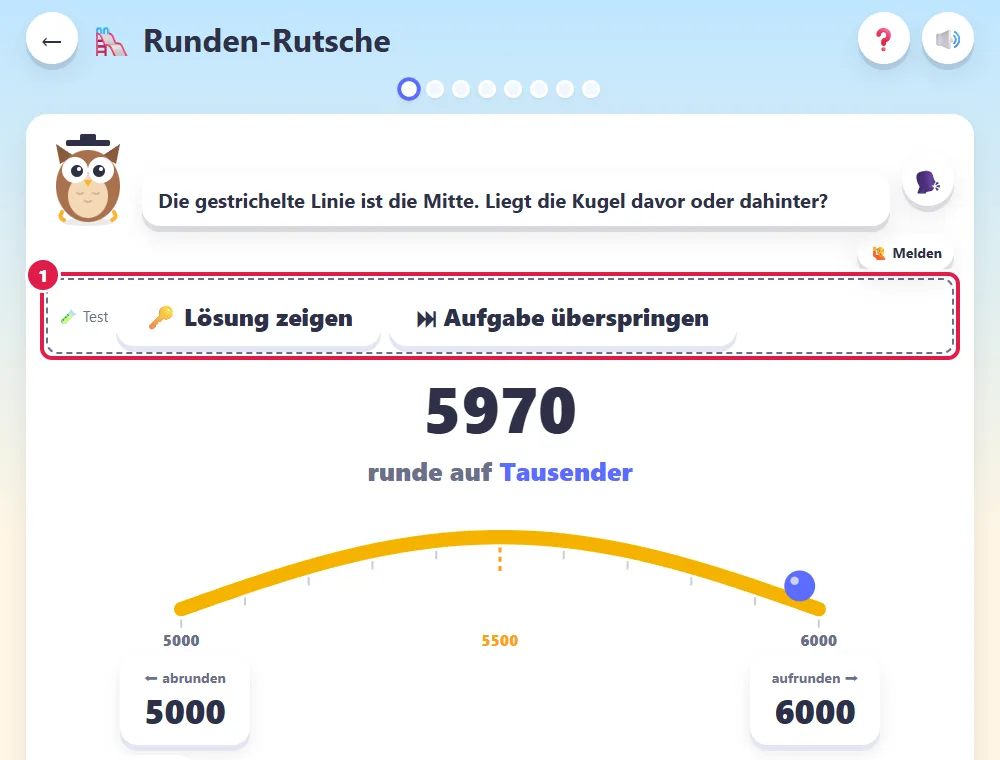
1Die Leiste Test gibt es nur für die Aufsicht: Lösung zeigen und Aufgabe überspringen — praktisch, um ein Spiel rasch kennenzulernen.
11. Freigabe: was Kinder sehen
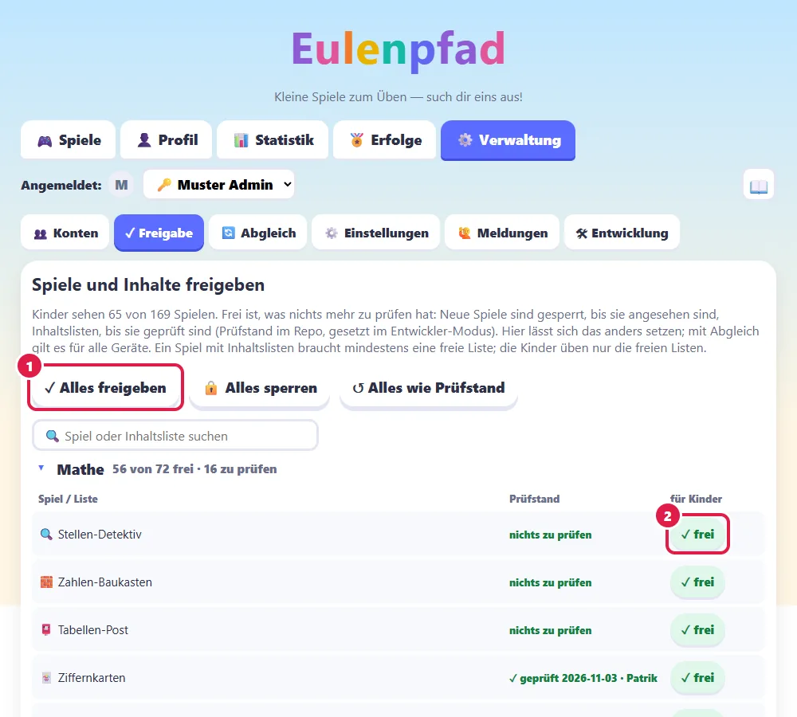
Neue Spiele und neue Wortlisten werden erst geprüft, bevor Kinder sie sehen. Was noch nicht geprüft ist, ist gesperrt. Unter Freigabe entscheiden Sie selbst:
- 1Alles freigeben, Alles sperren oder Alles wie Prüfstand (zurück auf den geprüften Stand) — für alle Spiele auf einmal.
- 2Je Spiel ✓ frei oder 🔒 gesperrt; die Fächer und Themen klappen Sie mit ▸ auf. „↺ wie Prüfstand“ nimmt Ihre eigene Wahl für ein Spiel zurück.
- Spiele mit Wortlisten oder Sätzen: Die Listen lassen sich einzeln freigeben. Ein Kind sieht ein solches Spiel, sobald mindestens eine Liste frei ist; im Spiel kommen nur freie Inhalte vor.
- Die Freigabe gilt für dieses Gerät. Mit dem Abgleich kommt sie auf die anderen Geräte.
Im Bereich Spiele zeigt der Filter 🔍 Zu prüfen der Aufsicht, was noch gesperrt ist.
12. Statistik und Fazit
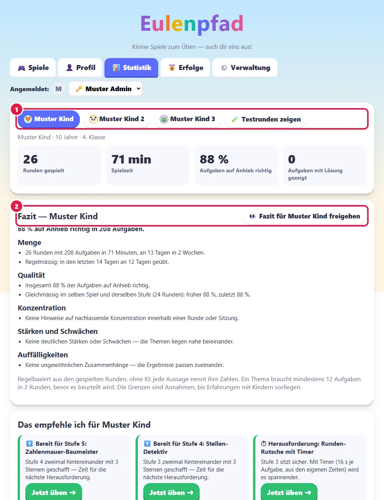
1Oben wählen Sie das Kind. „Testrunden zeigen“ blendet Ihre eigenen Probe-Runden ein.
- Kennzahlen: Runden, Spielzeit, Anteil Aufgaben auf Anhieb richtig (ohne Fehler und ohne Tipp).
- 2Fazit in Worten: Menge, Qualität, Konzentration, Stärken und Schwächen, Auffälligkeiten. Es entsteht nach festen Regeln aus den Runden, ohne KI, und jede Aussage nennt ihre Zahlen. Mit „Fazit für … freigeben“ sieht das Kind eine freundliche Fassung in seiner eigenen Statistik.
- Das empfehle ich: wo die nächste Stufe dran ist, was wiederholt werden sollte, wann ein Timer reizvoll wäre — mit Knopf „Jetzt üben“ direkt ins Spiel.
- Wann wird gelernt? Minuten je Tag, Wochentag und Tageszeit. Lieber oft und kurz als selten und lang.
- Konzentration: ob Zeit und Fehler gegen Ende einer Runde oder Sitzung zunehmen.
- Vorgehen: nicht nur ob, sondern wie ein Kind löst — etwa ob es alle Möglichkeiten der Reihe nach sucht.
- 📅 Lernplan: die letzten zwölf Wochen, erfüllt oder nicht (Wochenziel in Abschnitt 6).
- Lernziele und beste Sterne je Spiel und Stufe, Endlos-Rekorde und die letzten Runden.
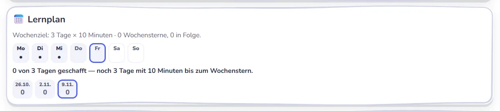
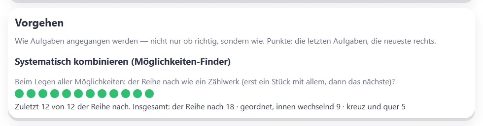
13. Erfolge: Wochenstern und Abzeichen
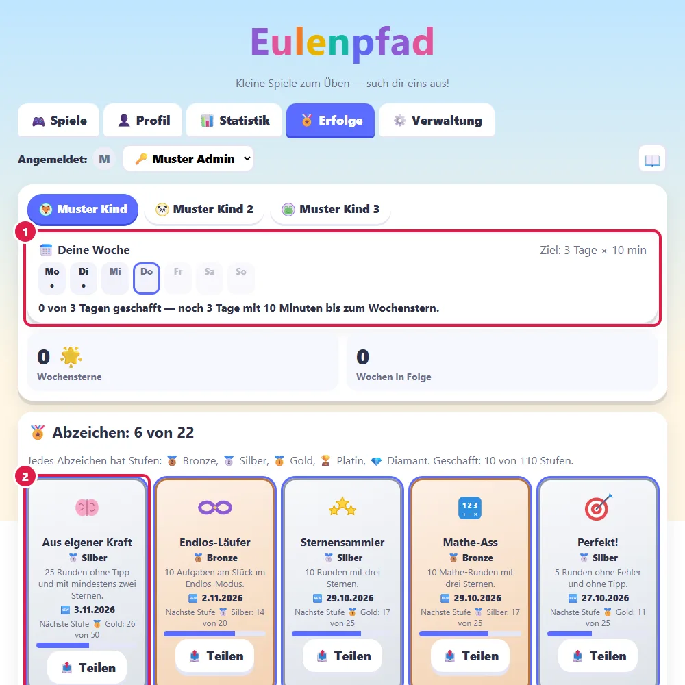
- 1Deine Woche: sieben Tage, ★ = Ziel des Tages erreicht, • = gespielt. Dazu die Wochensterne 🌟 und wie viele Wochen in Folge. Das Kind sieht die Woche auch kurz oben im Bereich Spiele.
- 2Abzeichen (19 Stück) für Runden, drei Sterne, alle sechs Stufen, verschiedene Spiele, Wochenziele, gefundene Fehler und mehr. Jedes hat fünf Stufen: 🥉 Bronze, 🥈 Silber, 🥇 Gold, 🏆 Platin, 💎 Diamant — etwa 1, 10, 50, 100 und 500 Runden; die Abstufung ist je Abzeichen eigen. Die Kachel zeigt die erreichte Stufe und den Weg zur nächsten. Neue Stufen tragen 🆕, bis das Kind sie gesehen hat. Testrunden zählen nicht.
- 📤 Teilen macht aus einem Abzeichen ein Bild (Vorname, Titel, Datum) und öffnet den Teilen-Dialog des Geräts oder speichert es. Das geschieht nur, wenn das Kind darauf tippt; weitere Angaben reisen nicht mit.
Als Aufsicht wählen Sie oben das Kind, wie in der Statistik.
14. Fehlermeldungen der Kinder
Findet ein Kind einen Fehler (falsch gewertet, Fehler in Text, Bild oder Lösung, nicht lösbar), tippt es im Spiel auf 🙋 Melden, wählt die Aufgabe (diese oder die davor) und schreibt kurz, was nicht stimmt. Das Spiel legt Aufgabe, Lösung und die letzten Eingaben dazu.
- Neue Meldungen zeigt 🙋 an der Verwaltung, Untertab Meldungen.
- Sie lesen und entscheiden: bestätigt oder kein Fehler (mit einer Erklärung fürs Kind).
- Bestätigte Meldungen leiten Sie weiter an die Entwicklung — per E-Mail aus Ihrem eigenen Mailprogramm, ohne den Namen des Kindes (Klasse, Spiel, Aufgabe, Begründung). Ist noch keine Adresse eingetragen, kopieren Sie den Text.
- „🔄 Antworten der Entwicklung abfragen“ holt den Stand: geplant, behoben oder kein Fehler. Das Kind sieht die Antwort mit 🔔 in seiner Statistik. Behobene Meldungen zählen für das Abzeichen Fehlerfinder.
💡 Eigene Anregungen: Darunter können Sie der Entwicklung selbst schreiben — eine Idee für ein neues Spiel, eine Verbesserung, Inhalte oder ein Lehrmittel, das anders schreibt. Das geht auf demselben Weg, die Antwort holen Sie ebenso ab. Die Kinder sehen davon nichts.
15. Daten sichern und einlesen
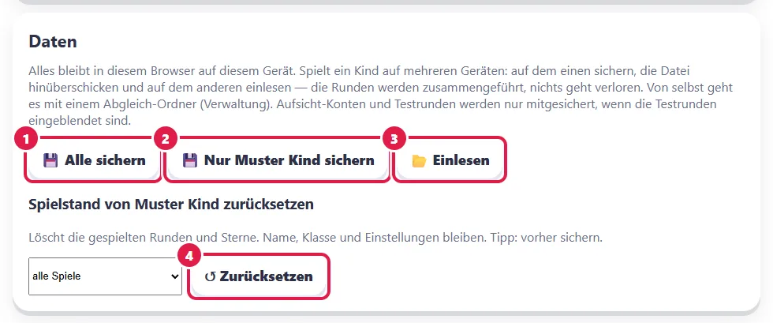
Ganz unten in der Statistik:
- 1Alle sichern lädt eine Datei lernspiele-…-Datum.json herunter. Bewahren Sie sie auf, zum Beispiel auf einem USB-Stick oder in Ihrem Cloud-Ordner.
- 2Nur … sichern sichert ein einzelnes Kind.
- 3Einlesen holt eine gesicherte Datei zurück. Dabei wird zusammengeführt: Runden, die schon da sind, zählen nur einmal, nichts geht verloren.
- 4Zurücksetzen löscht die Runden eines Kindes (alle Spiele oder eines). Name, Klasse und Einstellungen bleiben.
Die PIN der Aufsicht wird nie mitgesichert. Gesicherte Dateien enthalten Vornamen und Lernstand — geben Sie sie nur Personen, die das Kind begleiten.
16. Mehrere Geräte abgleichen
Spielt ein Kind am Tablet und am Laptop, oder haben Geschwister eigene Geräte, sorgt der Abgleich dafür, dass Statistik und Ranglisten überall vollständig sind.
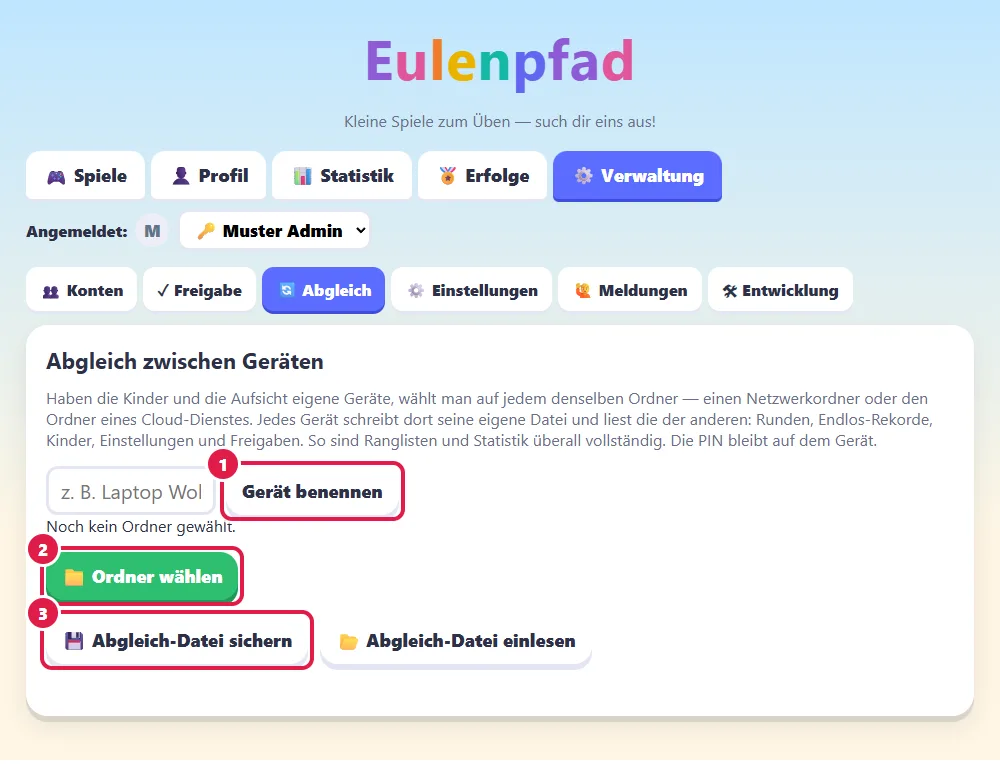
- 1Gerät benennen, zum Beispiel „Laptop Wohnzimmer“ — so sehen Sie später, woher Daten kommen.
- 2Ordner wählen: auf jedem Gerät denselben Ordner, etwa einen Netzwerkordner oder den Ordner eines Cloud-Dienstes. Jedes Gerät schreibt dort seine eigene Datei und liest die der anderen. Das geht heute in Chrome und Edge am Computer.
- 3Ohne Ordner (iPad, Android-Tablet, Firefox): Abgleich-Datei sichern, auf das andere Gerät bringen und dort Abgleich-Datei einlesen — und umgekehrt.
Abgeglichen werden Runden, Endlos-Rekorde, Kinder, Profile (mit Lernplan), Freigaben und Meldungen. Wochensterne und Abzeichen rechnet jedes Gerät aus den Runden selbst. Die PIN bleibt immer auf dem Gerät.
17. Einstellungen
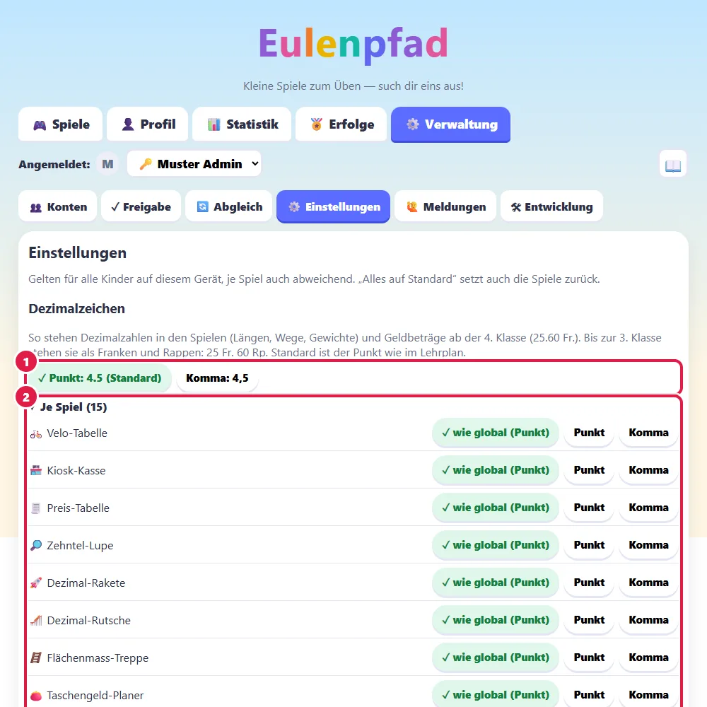
Die Einstellungen gelten für alle Kinder auf diesem Gerät.
- 1Dezimalzeichen für alle Spiele: Punkt (4.5, wie im Lehrplan, Standard) oder Komma (4,5) — so, wie es das Kind im Heft schreibt.
- 2Je Spiel abweichend: „wie global“, Punkt oder Komma.
- 3Alles auf Standard setzt alle Einstellungen zurück, auch die je Spiel.
Geldbeträge schreiben die Spiele bis zur 3. Klasse als „25 Fr. 60 Rp.“, ab der 4. Klasse als „25.60 Fr.“ — mit dem eingestellten Zeichen.
Fehler melden durch Kinder: aus, ab der 3. Klasse (Standard, weil die Begründung geschrieben wird), ab der 5. Klasse oder alle Kinder. Die Aufsicht kann immer melden.
☕ Eulenpfad unterstützen
Alle Spiele bleiben kostenlos, ohne Anmeldung und ohne Werbung. Wer die Arbeit daran unterstützen möchte, kann das freiwillig hier tun. Die Kinder sehen diesen Hinweis nirgends.
18. Häufige Fragen
Die Spielstände sind weg — was ist passiert?
Meist wurden die Browserdaten gelöscht, oder es wurde in einem privaten Fenster gespielt (dort vergisst der Browser alles beim Schliessen). Mit einer gesicherten Datei holen Sie alles zurück (Abschnitt 15).
Ein Kind sieht ein Spiel nicht.
Es ist vermutlich noch gesperrt (Abschnitt 11), oder der Filter „Meine Klasse“ blendet es aus.
Die Eule liest nicht vor.
Ist der Ton aus (🔇 oben rechts)? Hat das Gerät eine deutsche Stimme? Ohne Stimme fehlt der Knopf 🗣️; eine Stimme lässt sich in den Einstellungen des Geräts unter Sprache oder Bedienungshilfen dazuladen.
Mehrere Kinder an einem Gerät?
Kein Problem: Jedes Kind tippt beim Start seinen Namen an. Runden und Sterne werden getrennt gezählt.
Geht es ohne Internet?
Ja, wenn der Ordner der Spiele auf dem Gerät liegt: Doppelklick auf index.html genügt. Die Online-Version braucht zum Öffnen Internet; gespeichert wird aber auch dort nur im Browser.
Die Anleitung für Kinder: So spielst du.